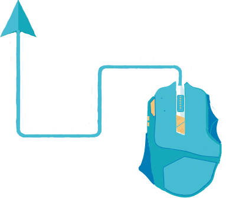
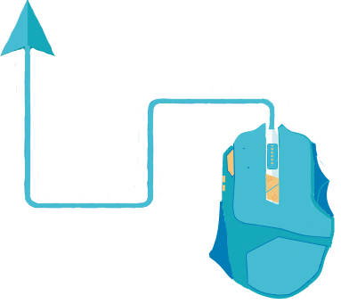

imagen awdawdawd awdawdawd awdawdwad
Joven dinámico con amplio potencial laboral y deseos de superación con una formación moral basado en la responsabilidad, lealtad y el respeto mutuo. Capacidad de apoyo en tareas extraordinarias y el cumplimiento dentro de los límites y objetivos propuestos por la empresa.


 
